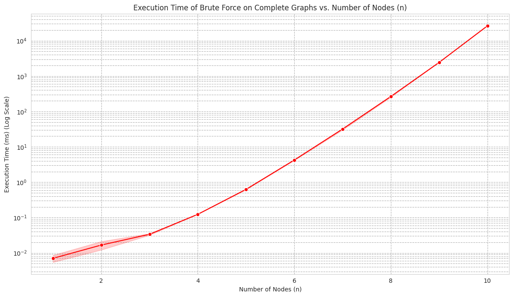
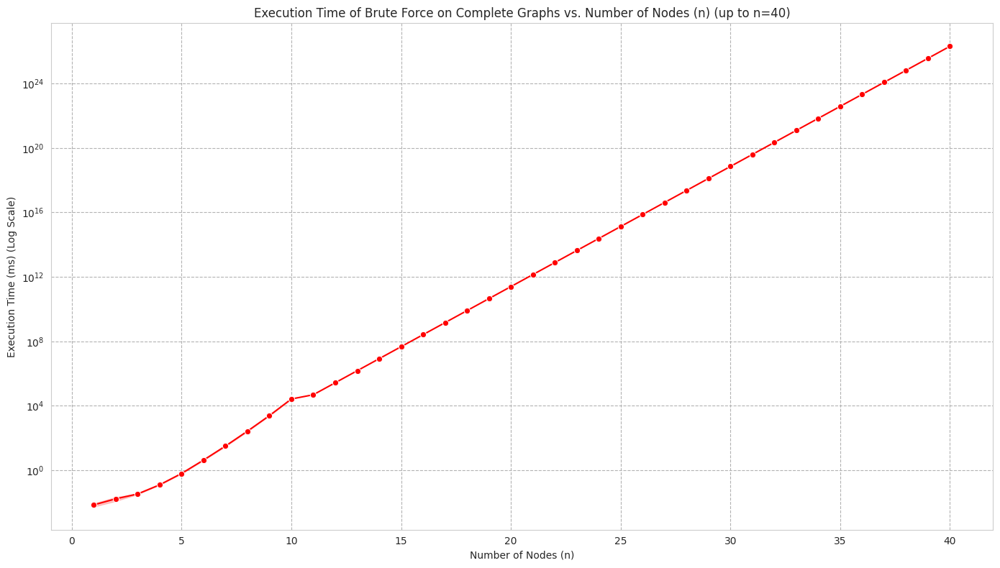

Coloreo de Grafos
Asignar colores a puntos conectados sin que compartan el mismo color
El objetivo: usar la menor cantidad de colores posible.
Aplicaciones Prácticas
Ejemplos de aplicaciones:
Horarios escolares: Asignar clases sin superposicionesRedes de radio/TV: Evitar interferencias entre canalesMapas geográficos: Colorear regiones adyacentesPlanificación de recursos: Distribuir tareas en equipos
¿Por Qué es Difícil?
Con 1-2 colores, es fácil incluso para grafos grandes.
Pero con 3 o más colores, se vuelve NP-completo – ¡puede tomar años encontrar la solución óptima, incluso en grafos pequeños!
Analogías para Entender
Analogía 1: Como colorear un mapa donde países vecinos no tengan el mismo color – ¡el clásico problema de mapas!
Analogía 2: Organizar una fiesta donde amigos no se sienten juntos si no se llevan bien.
Casos Fáciles de Resolver
Grafos Bipartitos
Se dividen en dos grupos sin conexiones internas. Solo necesitan 2 colores.
Ejemplo: Estudiantes y cursos – estudiantes conectados a cursos que toman.
graph LR;
S1[Estudiante 1] --> C1[Curso A];
S1 --> C2[Curso B];
S2[Estudiante 2] --> C1;
S2 --> C2;
S2 --> C3[Curso C];
Grafos Planares
Como mapas en papel plano. Máximo 4 colores bastan.
Ejemplo: Colorear un mapa de países.
graph TD;
Brasil --- Peru
Brasil --- Paraguay
Brasil --- Uruguay
Chile --- Peru[Perú]
Chile --- Bolivia
Bolivia --- Peru
Bolivia --- Brasil
Bolivia --- Paraguay
Argentina[Argentina] --- Chile[Chile]
Argentina --- Bolivia[Bolivia]
Argentina --- Paraguay[Paraguay]
Argentina --- Brasil[Brasil]
Argentina --- Uruguay[Uruguay]
Peru --- Brasil
Enfoque Codicioso
Asigna colores uno por uno, eligiendo el primero disponible.
Ventaja: Muy rápido, pero no siempre óptimo.
Ejemplo: Llenar asientos en un teatro sin plan.
Algoritmos Más Inteligentes
Welsh-Powell: Empieza por los puntos más conectadosDSATUR: Elige dinámicamente el punto más "urgente"Backtracking: Prueba todas las opciones hasta encontrar la mejor
Balancean velocidad y calidad para problemas grandes.
Variantes del Problema
Coloreo de Aristas: Colorear conexiones en lugar de puntosColoreo Equitativo: Distribuir colores de forma justaColoreo Dinámico: Adaptarse a cambios en el grafo
Cada variante resuelve necesidades específicas.
Mediciones de Algoritmo Fuerza Bruta
Tiempo vs n en grafo completo; escala logarítmica.
Mediciones reales hasta n = 10

Grafo completo, resultados de medición; escala logarítmica.
Proyección hasta n = 40 (regresión lineal)

Estimación basada en regresión lineal de mediciones; escala logarítmica.
Escala del Tiempo (1)
104 ms = 10 segundos.
Parpadear, leer una notificación, cargar una página web.
Escala del Tiempo (2)
108 ms = 100 000 s ≈ 27.8 h ≈ 1.2 días.
Aproximadamente un día y medio.
Escala del Tiempo (3)
1012 ms = 109 s ≈ 31.7 años.
Unas tres décadas.
Escala del Tiempo (4)
1016 ms = 1013 s ≈ 3.17 × 105 años (≈ 317 mil años).
Más de 300 mil años.
¿Cuánto es 1024 ms ?
Ese punto (n = 36) en la gráfica equivale a:
1024 milisegundos = 1021 segundos
= 1.67 × 1019 minutos
= 2.78 × 1017 horas
= 1.16 × 1016 días
= ≈ 3.17 × 1013 años (≈ 31.7 billones; billón = 1012 )
Para dimensionar:
La edad del universo es ≈ 13.8 mil millones de años (1.38 × 1010 ).
1024 ms es ≈ 2,300 veces esa edad.
Conclusión: la fuerza bruta no escala; tamaños moderados se vuelven imposibles en la práctica.
Visualización de Tipos de Grafos
Ejemplos pequeños para cada familia definida en el código.
Ciclo (Cycle)
Todos los nodos forman un anillo; cada uno conecta con dos vecinos.
graph LR;
A((v0)) --- B((v1)) --- C((v2)) --- D((v3)) --- E((v4)) --- A
Ciclo (DOT)
Distribución circular forzada con layout=circo.
digraph G {
layout=circo;
node [shape=circle style=filled fillcolor="#2b2b2b" fontcolor="#ffffff"];
A [label="v0"]; B [label="v1"]; C [label="v2"]; D [label="v3"]; E [label="v4"];
A -- B; B -- C; C -- D; D -- E; E -- A;
}
Completo (Clique)
Todos los nodos conectados entre sí (máximo número de aristas).
graph LR;
K1((k0)) --- K2((k1))
K1 --- K3((k2))
K1 --- K4((k3))
K2 --- K3
K2 --- K4
K3 --- K4
Completo (DOT)
Todos con todos; layout=neato para distribución uniforme.
graph G {
layout=neato; overlap=false; splines=true;
node [shape=circle style=filled fillcolor="#2b2b2b" fontcolor="#ffffff"];
K0 -- K1; K0 -- K2; K0 -- K3; K1 -- K2; K1 -- K3; K2 -- K3;
}
Estrella (Star)
Un centro conectado a todos los demás; las hojas no están entre sí.
graph LR;
C((center)) --- L1((leaf1))
C --- L2((leaf2))
C --- L3((leaf3))
C --- L4((leaf4))
C --- L5((leaf5))
Estrella (DOT)
Centro radial; layout=twopi.
graph G {
layout=twopi; root=center;
node [shape=circle style=filled fillcolor="#2b2b2b" fontcolor="#ffffff"];
center -- leaf1; center -- leaf2; center -- leaf3; center -- leaf4; center -- leaf5;
}
Bipartito Completo K(3,3)
Dos grupos; cada nodo de un grupo se conecta con todos los del otro.
graph LR;
A1((a0)); A2((a1)); A3((a2)); B1((b0)); B2((b1)); B3((b2));
A1 --- B1; A1 --- B2; A1 --- B3;
A2 --- B1; A2 --- B2; A2 --- B3;
A3 --- B1; A3 --- B2; A3 --- B3;
Bipartito K(3,3) (DOT)
Niveles por conjunto; layout=dot (rango por capas).
graph G {
layout=dot; rankdir=LR; nodesep=0.4; ranksep=0.8;
node [shape=circle style=filled fillcolor="#2b2b2b" fontcolor="#ffffff"];
{rank=same; A0; A1; A2}
{rank=same; B0; B1; B2}
A0 -- B0; A0 -- B1; A0 -- B2; A1 -- B0; A1 -- B1; A1 -- B2; A2 -- B0; A2 -- B1; A2 -- B2;
}
Camino (Path)
Nodos en línea: extremos con un vecino, internos con dos.
graph LR;
P0((p0)) --- P1((p1)) --- P2((p2)) --- P3((p3)) --- P4((p4)) --- P5((p5))
Camino (DOT)
Disposición lineal izquierda a derecha.
graph G {
layout=dot; rankdir=LR;
node [shape=circle style=filled fillcolor="#2b2b2b" fontcolor="#ffffff"];
P0 -- P1 -- P2 -- P3 -- P4 -- P5;
}
Rueda (Wheel)
Un centro conectado a un ciclo externo; mezcla de estrella y ciclo.
graph LR;
Hub((hub)) --- R0((rim0))
Hub --- R1((rim1))
Hub --- R2((rim2))
Hub --- R3((rim3))
Hub --- R4((rim4))
Hub --- R5((rim5))
R0 --- R1 --- R2 --- R3 --- R4 --- R5 --- R0
Rueda (DOT)
Ciclo exterior circular con radios al centro.
graph G {
layout=circo;
node [shape=circle style=filled fillcolor="#2b2b2b" fontcolor="#ffffff"];
hub; r0; r1; r2; r3; r4; r5;
r0 -- r1 -- r2 -- r3 -- r4 -- r5 -- r0;
hub -- r0; hub -- r1; hub -- r2; hub -- r3; hub -- r4; hub -- r5;
}
Petersen
Grafo famoso: 10 nodos, simétrico; útil como contraejemplo.
graph LR;
o0((o0)) --- o1((o1)) --- o2((o2)) --- o3((o3)) --- o4((o4)) --- o0;
i0((i0)) --- i2((i2)) --- i4((i4)) --- i1((i1)) --- i3((i3)) --- i0;
o0 --- i0; o1 --- i1; o2 --- i2; o3 --- i3; o4 --- i4;
Grilla 3x3 (Grid)
Nodos en filas y columnas; estructura cuadriculada.
graph LR;
g0_0((g0_0)) --- g0_1((g0_1)) --- g0_2((g0_2));
g1_0((g1_0)) --- g1_1((g1_1)) --- g1_2((g1_2));
g2_0((g2_0)) --- g2_1((g2_1)) --- g2_2((g2_2));
g0_0 --- g1_0 --- g2_0; g0_1 --- g1_1 --- g2_1; g0_2 --- g1_2 --- g2_2;
Grilla 3x3 (DOT)
Posiciones fijas como cuadrícula (neato + pos).
graph G {
layout=neato; overlap=false; splines=false;
node [shape=circle style=filled fillcolor="#2b2b2b" fontcolor="#ffffff"];
g00 [pos="0,2!"]; g01 [pos="1,2!"]; g02 [pos="2,2!"];
g10 [pos="0,1!"]; g11 [pos="1,1!"]; g12 [pos="2,1!"];
g20 [pos="0,0!"]; g21 [pos="1,0!"]; g22 [pos="2,0!"];
g00 -- g01 -- g02; g10 -- g11 -- g12; g20 -- g21 -- g22;
g00 -- g10 -- g20; g01 -- g11 -- g21; g02 -- g12 -- g22;
}
Planar (Triangulación simple)
Ciclo externo con diagonales desde un vértice sin cruces.
graph LR;
pl0((pl0)) --- pl1((pl1)) --- pl2((pl2)) --- pl3((pl3)) --- pl4((pl4)) --- pl0;
pl0 --- pl2; pl0 --- pl3; pl0 --- pl4;
Árbol Binario (height=3)
Cada nodo interno tiene dos hijos; sin ciclos.
graph TD;
t0((t0)) --- t1((t1)); t0 --- t2((t2));
t1 --- t3((t3)); t1 --- t4((t4));
t2 --- t5((t5)); t2 --- t6((t6));
t3 --- t7((t7)); t3 --- t8((t8));
t4 --- t9((t9)); t4 --- t10((t10));
t5 --- t11((t11)); t5 --- t12((t12));
t6 --- t13((t13)); t6 --- t14((t14));
Árbol Binario (DOT)
Layout jerárquico (dot) en niveles.
digraph G {
layout=dot; rankdir=TB;
node [shape=circle style=filled fillcolor="#2b2b2b" fontcolor="#ffffff"];
t0 -> t1; t0 -> t2; t1 -> t3; t1 -> t4; t2 -> t5; t2 -> t6; t3 -> t7; t3 -> t8; t4 -> t9; t4 -> t10; t5 -> t11; t5 -> t12; t6 -> t13; t6 -> t14;
}
Hipercubo (dimension=3)
Nodos representan cadenas de bits; aristas cambian un bit.
graph LR;
h000((000)) --- h001((001)) --- h011((011)) --- h010((010)) --- h000;
h100((100)) --- h101((101)) --- h111((111)) --- h110((110)) --- h100;
h000 --- h100; h001 --- h101; h011 --- h111; h010 --- h110;
Hipercubo (DOT)
Dos cuadrados conectados (neato, simetría).
graph G {
layout=neato; overlap=false; splines=true;
node [shape=circle style=filled fillcolor="#2b2b2b" fontcolor="#ffffff"];
"000" -- "001" -- "011" -- "010" -- "000";
"100" -- "101" -- "111" -- "110" -- "100";
"000" -- "100"; "001" -- "101"; "011" -- "111"; "010" -- "110";
}
Prisma (n=5)
Dos ciclos paralelos conectados por pares de vértices.
graph LR;
c1_0((c1_0)) --- c1_1((c1_1)) --- c1_2((c1_2)) --- c1_3((c1_3)) --- c1_4((c1_4)) --- c1_0;
c2_0((c2_0)) --- c2_1((c2_1)) --- c2_2((c2_2)) --- c2_3((c2_3)) --- c2_4((c2_4)) --- c2_0;
c1_0 --- c2_0; c1_1 --- c2_1; c1_2 --- c2_2; c1_3 --- c2_3; c1_4 --- c2_4;
Prisma (DOT)
Dos ciclos en paralelo conectados verticalmente.
graph G {
layout=neato; overlap=false;
node [shape=circle style=filled fillcolor="#2b2b2b" fontcolor="#ffffff"];
c10 -- c11 -- c12 -- c13 -- c14 -- c10;
c20 -- c21 -- c22 -- c23 -- c24 -- c20;
c10 -- c20; c11 -- c21; c12 -- c22; c13 -- c23; c14 -- c24;
}
Kneser KG(5,2)
Es isomorfo al grafo de Petersen (misma estructura con distinto etiquetado).
Vértices: subconjuntos de tamaño 2; arista si son disjuntos.
graph LR;
o0((012)) --- o1((013)) --- o2((014)) --- o3((023)) --- o4((024)) --- o0;
i0((034)) --- i2((124)) --- i4((123)) --- i1((134)) --- i3((234)) --- i0;
o0 --- i0; o1 --- i1; o2 --- i2; o3 --- i3; o4 --- i4;
Escalera (Ladder)
Dos caminos paralelos unidos por "peldaños".
graph LR;
l1_0((l1_0)) --- l1_1((l1_1)) --- l1_2((l1_2)) --- l1_3((l1_3));
l2_0((l2_0)) --- l2_1((l2_1)) --- l2_2((l2_2)) --- l2_3((l2_3));
l1_0 --- l2_0; l1_1 --- l2_1; l1_2 --- l2_2; l1_3 --- l2_3;
Escalera (DOT)
Dos líneas paralelas con conectores.
graph G {
layout=dot; rankdir=LR; ranksep=0.6; nodesep=0.4;
node [shape=circle style=filled fillcolor="#2b2b2b" fontcolor="#ffffff"];
{rank=same; l10; l11; l12; l13}
{rank=same; l20; l21; l22; l23}
l10 -- l11 -- l12 -- l13;
l20 -- l21 -- l22 -- l23;
l10 -- l20; l11 -- l21; l12 -- l22; l13 -- l23;
}
Escalera Circular (Circular Ladder)
Versión cerrada de la escalera: ambos extremos unidos formando ciclos.
graph LR;
cl1_0((c1_0)) --- cl1_1((c1_1)) --- cl1_2((c1_2)) --- cl1_3((c1_3)) --- cl1_4((c1_4)) --- cl1_0;
cl2_0((c2_0)) --- cl2_1((c2_1)) --- cl2_2((c2_2)) --- cl2_3((c2_3)) --- cl2_4((c2_4)) --- cl2_0;
cl1_0 --- cl2_0; cl1_1 --- cl2_1; cl1_2 --- cl2_2; cl1_3 --- cl2_3; cl1_4 --- cl2_4;
Escalera Circular (DOT)
Dos ciclos paralelos conectados (prisma).
graph G {
layout=neato; overlap=false;
node [shape=circle style=filled fillcolor="#2b2b2b" fontcolor="#ffffff"];
cl10 -- cl11 -- cl12 -- cl13 -- cl14 -- cl10;
cl20 -- cl21 -- cl22 -- cl23 -- cl24 -- cl20;
cl10 -- cl20; cl11 -- cl21; cl12 -- cl22; cl13 -- cl23; cl14 -- cl24;
}
Friendship (n=3)
Varios triángulos que comparten un vértice central.
graph LR;
FC((center)) --- F0_1((f0_1)) --- F0_2((f0_2)) --- FC;
FC --- F1_1((f1_1)) --- F1_2((f1_2)) --- FC;
FC --- F2_1((f2_1)) --- F2_2((f2_2)) --- FC;
Friendship (DOT)
Triángulos compartiendo un centro (radial).
graph G {
layout=twopi; root=center;
node [shape=circle style=filled fillcolor="#2b2b2b" fontcolor="#ffffff"];
center -- f01; center -- f02; f01 -- f02;
center -- f11; center -- f12; f11 -- f12;
center -- f21; center -- f22; f21 -- f22;
}
Crown (n=5)
Grafo bipartito completo sin las parejas directas (se quita el matching perfecto).
graph LR;
crown_a0((a0)); crown_a1((a1)); crown_a2((a2)); crown_a3((a3)); crown_a4((a4));
crown_b0((b0)); crown_b1((b1)); crown_b2((b2)); crown_b3((b3)); crown_b4((b4));
crown_a0 --- crown_b1; crown_a0 --- crown_b2; crown_a0 --- crown_b3; crown_a0 --- crown_b4;
crown_a1 --- crown_b0; crown_a1 --- crown_b2; crown_a1 --- crown_b3; crown_a1 --- crown_b4;
crown_a2 --- crown_b0; crown_a2 --- crown_b1; crown_a2 --- crown_b3; crown_a2 --- crown_b4;
crown_a3 --- crown_b0; crown_a3 --- crown_b1; crown_a3 --- crown_b2; crown_a3 --- crown_b4;
crown_a4 --- crown_b0; crown_a4 --- crown_b1; crown_a4 --- crown_b2; crown_a4 --- crown_b3;
Crown (DOT)
Bipartito por niveles sin matching perfecto.
graph G {
layout=dot; rankdir=LR; nodesep=0.4; ranksep=0.8;
node [shape=circle style=filled fillcolor="#2b2b2b" fontcolor="#ffffff"];
{rank=same; a0; a1; a2; a3; a4}
{rank=same; b0; b1; b2; b3; b4}
a0 -- b1; a0 -- b2; a0 -- b3; a0 -- b4;
a1 -- b0; a1 -- b2; a1 -- b3; a1 -- b4;
a2 -- b0; a2 -- b1; a2 -- b3; a2 -- b4;
a3 -- b0; a3 -- b1; a3 -- b2; a3 -- b4;
a4 -- b0; a4 -- b1; a4 -- b2; a4 -- b3;
}
Conclusión
El problema de coloreo de grafos tiene importantes aplicaciones prácticas y es imprescindible elegir el algoritmo más adecuado para cada caso.